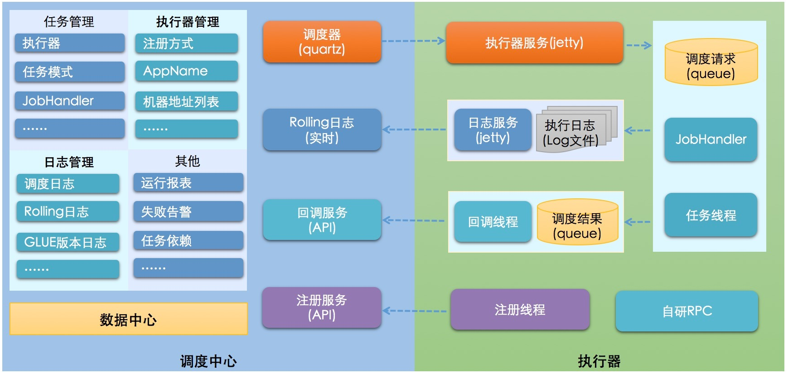

使用原因
公司 Z 项目使用的是 KOA2 架构的 NODEJS 服务，计划任务是自构在服务内部功能，高度耦合在服务中，与之有相同情况的还有 rabbitmq 和 emq 等模块，造成的问题是在高可用部署多实例的场景下，计划任务是使用 zookeeper 实现分布式锁的能力，但是计划任务还是会被多次执行，所以考虑把该服务中可剥离的部分进行剥离，让该服务可以提供纯粹的 HTTP 服务能力。
选型
| 特性 |
quartz |
elastic-job-cloud |
xxl-job |
antares |
opencron |
| 依赖 |
mysql |
jdk1.7+, zookeeper 3.4.6+ ,maven3.0.4+ ,mesos |
mysql ,jdk1.7+ , maven3.0+ |
jdk 1.7+ , redis , zookeeper |
jdk1.7+ , Tomcat8.0+ |
| HA |
多节点部署，通过竞争数据库锁来保证只有一个节点执行任务 |
通过 zookeeper 的注册与发现，可以动态的添加服务器。 支持水平扩容 |
集群部署 |
集群部署 |
- |
| 任务分片 |
- |
支持 |
支持 |
支持 |
- |
| 文档完善 |
完善 |
完善 |
完善 |
略少 |
略少 |
| 管理界面 |
- |
支持 |
支持 |
支持 |
支持 |
| 难易程度 |
简单 |
较复杂 |
简单 |
一般 |
一般 |
| 公司 |
OpenSymphony |
当当网 |
个人 |
个人 |
个人 |
| 高级功能 |
- |
弹性扩容，多种作业模式，失效转移，运行状态收集，多线程处理数据，幂等性，容错处理，spring 命名空间支持 |
弹性扩容，分片广播，故障转移，Rolling 实时日志，GLUE（支持在线编辑代码，免发布）,任务进度监控，任务依赖，数据加密，邮件报警，运行报表，国际化 |
任务分片， 失效转移，弹性扩容 |
时间规则支持 quartz 和 crontab ，kill 任务， 现场执行，查询任务运行状态 |
| 缺点 |
没有管理界面，以及不支持任务分片等。不适用于分布式场景 |
需要引入 zookeeper , mesos, 增加系统复杂度, 学习成本较高 |
调度中心通过获取 DB 锁来保证集群中执行任务的唯一性， 如果短任务很多，随着调度中心集群数量增加，那么数据库的锁竞争会比较厉害，性能不好。 |
不支持动态添加任务 |
不适用于分布式场景 |
| 使用企业 |
大众化产品，对分布式调度要求不高的公司大面积使用 |
36 氪，当当网，国美，金柚网，联想，唯品会，亚信，平安，猪八戒 |
大众点评，运满满，优信二手车，拍拍贷 |
- |
- |
- xxl-job 系统架构
个人开源的一个轻量级分布式任务调度框架 ，主要分为调度中心和执行器两部分 ， 调度中心在启动初始化的时候，会默认生成执行器的 RPC 代理对象（http 协议调用）， 执行器项目启动之后， 调度中心在触发定时器之后通过 jobHandle 来调用执行器项目里面的代码，核心功能和 elastic-job 差不多，同时技术文档比较完善，系统架构图如下：

docker 方式安装
通过官方文档，以 demo 方式运行需要启动两个容器，一个是 admin 管理平台，一个是示例执行器
安装前的准备
- 选定安装版本 2.3.1
- mysql
- 初始化“调度数据库”，位置：
1
| /xxl-job/doc/db/tables_xxl_job.sql
|
DOCKER 方式安装
admin 平台
1
2
3
4
5
6
7
8
9
10
11
12
13
14
15
16
17
18
19
20
21
22
23
| ### 调度中心JDBC链接：链接地址请保持和 2.1章节 所创建的调度数据库的地址一致
spring.datasource.url=jdbc:mysql://127.0.0.1:3306/xxl_job?useUnicode=true&characterEncoding=UTF-8&autoReconnect=true&serverTimezone=Asia/Shanghai
spring.datasource.username=root
spring.datasource.password=root_pwd
spring.datasource.driver-class-name=com.mysql.jdbc.Driver
### 报警邮箱
spring.mail.host=smtp.qq.com
spring.mail.port=25
spring.mail.username=xxx@qq.com
spring.mail.password=xxx
spring.mail.properties.mail.smtp.auth=true
spring.mail.properties.mail.smtp.starttls.enable=true
spring.mail.properties.mail.smtp.starttls.required=true
spring.mail.properties.mail.smtp.socketFactory.class=javax.net.ssl.SSLSocketFactory
### 调度中心通讯TOKEN [选填]：非空时启用；
xxl.job.accessToken=
### 调度中心国际化配置 [必填]： 默认为 "zh_CN"/中文简体, 可选范围为 "zh_CN"/中文简体, "zh_TC"/中文繁体 and "en"/英文；
xxl.job.i18n=zh_CN
## 调度线程池最大线程配置【必填】
xxl.job.triggerpool.fast.max=200
xxl.job.triggerpool.slow.max=100
### 调度中心日志表数据保存天数 [必填]：过期日志自动清理；限制大于等于7时生效，否则, 如-1，关闭自动清理功能；
xxl.job.logretentiondays=30
|
1
2
3
| --spring.datasource.url
--spring.datasource.username
--spring.datasource.password
|
1
| docker run -e PARAMS="--spring.datasource.url=jdbc:mysql://localhost:3306/xxl_job?useUnicode=true&characterEncoding=UTF-8&autoReconnect=true&serverTimezone=Asia/Shanghai --spring.datasource.username=root --spring.datasource.password=123456" --network=host -p 8080:8080 -v /tmp:/data/applogs --name xxl-job-admin -d xuxueli/xxl-job-admin:2.3.1
|
验证 admin 平台启动是否正常
执行器
1
2
3
4
5
6
7
8
9
10
11
12
13
14
15
16
| ### 调度中心部署根地址 [选填]：如调度中心集群部署存在多个地址则用逗号分隔。执行器将会使用该地址进行"执行器心跳注册"和"任务结果回调"；为空则关闭自动注册；
xxl.job.admin.addresses=http://127.0.0.1:8080/xxl-job-admin
### 执行器通讯TOKEN [选填]：非空时启用；
xxl.job.accessToken=
### 执行器AppName [选填]：执行器心跳注册分组依据；为空则关闭自动注册
xxl.job.executor.appname=xxl-job-executor-sample
### 执行器注册 [选填]：优先使用该配置作为注册地址，为空时使用内嵌服务 ”IP:PORT“ 作为注册地址。从而更灵活的支持容器类型执行器动态IP和动态映射端口问题。
xxl.job.executor.address=
### 执行器IP [选填]：默认为空表示自动获取IP，多网卡时可手动设置指定IP，该IP不会绑定Host仅作为通讯实用；地址信息用于 "执行器注册" 和 "调度中心请求并触发任务"；
xxl.job.executor.ip=
### 执行器端口号 [选填]：小于等于0则自动获取；默认端口为9999，单机部署多个执行器时，注意要配置不同执行器端口；
xxl.job.executor.port=9999
### 执行器运行日志文件存储磁盘路径 [选填] ：需要对该路径拥有读写权限；为空则使用默认路径；
xxl.job.executor.logpath=/data/applogs/xxl-job/jobhandler
### 执行器日志文件保存天数 [选填] ： 过期日志自动清理, 限制值大于等于3时生效; 否则, 如-1, 关闭自动清理功能；
xxl.job.executor.logretentiondays=30
|
1
| --xxl.job.admin.addresses
|
1
| docker run --network=host -d xxl-job-executor-sample-springboot:2.3.1 --xxl.job.admin.addresses=http://localhost:8080/xxl-job-admin
|
关于执行器
- 执行器的玩法很多，“执行器”项目：xxl-job-executor-sample-springboot (提供多种版本执行器供选择，现以 springboot 版本为例，可直接使用，也可以参考其并将现有项目改造成执行器)
- 作用：负责接收“调度中心”的调度并执行；可直接部署执行器，也可以将执行器集成到现有业务项目中。支持各种语言进行二次开发；
遇到的坑
- 版本一定要统一，数据库的初始化脚本和执行器的代码都要在指定源码中获取，尤其是数据库脚本，不同版本中的数据表结构都是不同的，在 docker 启动后会看到报数据库的错误，避免走弯路。
- 执行器因为是 demo，官方并未提供 docker 镜像，但是在源码中提供了 dockerFile，需要 java 环境自行打包
- 执行器的镜像启动网络只能选 host 模式，admin 和执行器相互调用正常，由于对源码不熟悉，无法用 docker compose 的方式通过映射端口的方式部署（有待继续调研）
安装使用后的一些理解
- 首先需要 admin 平台先启动，其次再启动执行器，它们之间启动是有先后顺序的；
- 原因在于，执行器在其启动时会将自身注册到管理平台；
- admin 平台会在任务管理时，譬如创建一个任务，将该任务数据记录到 mysql 数据库中，并调用执行器，在执行器中创建一个进程，去启动计划任务；
- 执行器在到时间点执行任务后，会将执行日志记录到 mysql 数据库日志表中；
- admin 平台上查看日志，其实是查看 mysql 数据库表，不会直接与执行器发生联系；
待续
https://blog.csdn.net/xrq1995/article/details/126235540
参考：分布式定时任务技术选型
参考：分布式任务调度平台 XXL-JOB